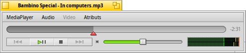
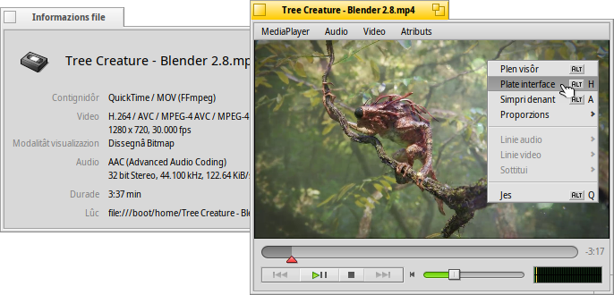
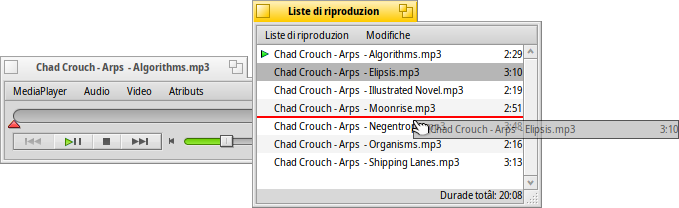
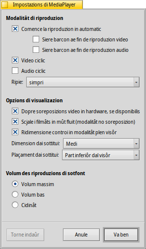

MediaPlayer
MediaPlayer
| Deskbar: | ||
| Posizion: | /boot/system/apps/MediaPlayer | |
| Impostazions: | ~/config/settings/MediaPlayer |
MediaPlayer al è il riprodutôr multimediâl predefinît par ducj i file audio e video. In graciis dal backend ffmpeg, a son supuartâts une sdrume di formâts di chei plui doprâts. La sô interface semplice e à ducj i controi che un si spiete:
Il cursôr de sbare di avanzament ti permet di lâ daurman intune posizion, lassant il mouse parsore de sbare ti mostrarà il timp atuâl e trop che al reste dal videoclip o de musiche. Fasint clic sul timp ae sô diestre, chest timp al cambie tra lungjece, timp atuâl e timp che al reste.
Sot di chel tu cjatis i solits controi par saltâ al toc precedent, riproduzion/pause, ferme e salte al prossim toc. Dopo al rive un control dal volum (fasint clic sul simbul de casse sonore al comunte il cidinâ) e un misuradôr di VU (Unitât di Volum).
Riproduzion audio e video
Viodût che no je nissune funzionalitât specifiche pe riproduzion audio, o larin drets aes funzionalitâts video o gjenerâls.
Al è disponibil par dutis lis sorzints multimediâls (ALT I). Chest al mostre informazions sul file che al è cumò cjariât, come par esempli la durade o i detais de linie audio/video e il so codec.
La plui part dai comants doprâts tai menù a son ancje disponibii cul menù contestuâl dal clic-diestri inte aree dai videos. Util cuant che si è in modalitât plen visôr.
Sot di tu cjatarâs lis opzions par ingrandî il barcon a varis nivei o sfuarçâ lis proporzions a caulchi valôr standard. Lassant lis proporzions al valôr predefinît al varès di funzionâ in maniere otimâl pai file codificâts in maniere juste.
MediaPlayer al supuarte i sottituis in formât SRT. Par viodiju sot de vôs , il lôr non di file al à di jessi compagn di chel dal file video, cuntun sufìs cul non de lenghe e ".srt" al puest de estension dal video. Par esempli:
MyMovie.avi MyMovie.Deutsch.srt MyMovie.English.srt MyMovie.Français.srt MyMovie.Furlan.srt
Dal sot-menù a puedin jessi disponibilis plui liniis audio, dispès dopradis par vê plui lenghis intun file video sôl. Il sot-menù al da lis stessi pussibilitâts cuant che si à disponibii plui flus video.
Tu puedis comutâ la modalitât (ALT INVIE o F o un dopli clic di çampe), platâ i ôrs dal barcon di MediaPlayer e i controi cun (ALT H o un dopli clic di dieste) o have it's window (ALT A).
Lis listis di riproduzion
(ALT P) al vierç un barcon cui file che a son cumò in code pe riproduzion. Fasint dopli clic suntune vôs MediaPlayer al tacarà a riprodusile.
Tu puedis zontâ plui file molantju inte liste e justant la lôr posizion cul strissine-e-mole. Dal menù tu puedis fâ o (DEL) suntune vôs de liste o eliminâ il file atuâl cun (ALT T).
Logjic, tu puedis fâ suntune playlist e plui indenant fâ par tornâle a vierzi, opûr fâle partî fasint un sepliç dopli clic sul file de liste di riproduzion.
Impostazions
A son diviersis impostazins par regolâ cun precision il compuartament di MediaPlayer:
Il prin lot, , si spieghe di bessôl.
Scomençâ la riproduzion in automatic, sierâ i barcons cuant che si finìs o riprodusi i file multimediâi in mût ciclic.
Dal menù a tende tu sielzis ce mût che al à di compuartâsi MediaPlayer cuant che si invie. Se al à di ripiâ di dulà che si jere fermât la ultime volte met , opûr par fâ in mût che al domandi: .
Dopo si à diferentis .
Tu puedis sielzi se ativâ , che al sbasse la utilizazion de CPU, ma al funzione dome par un sôl barcon video e al à bisugne di un driver di schede video supuartade.
Tu puedis ativâ (cuant che no si è in modalitât soreposizion) che al dopre un filtri une vore svelt par smussâ i pixel che se no a semein blocs cuant che si aumente l'ingrandiment o si viôt a plen visôr.
se tu preferissis controi un pêl plui grancj, magari parcè che tu viodis il schermi di un pêl plui lontan cuant che tu sês in modalitât plen visôr.
Dopo si à lis impostazions pe e . I sottitui a puedin jessi mostrât te , che ju varà simpri soreponûts ae imagjin. O , che invezit ti permet di ridimensionâ il barcon in verticâl e vê visibii i sottitui te striche nere in bas.
Lis ultimis impostazions a determinin il volum des riproduzions di chei barcons che no son atîfs in chel moment. Tu puedis vêlis che a inçontenedin al , che a fasedin mancul confusion cun o che e stedin cuietis cun .
Controi di tastiere
MediaPlayer al ufrìs cumbinazions di tascj utilis par controlâ la riproduzion cence doprâ il mouse.
| Z | Salte al toc precedent | |
| X | Riprodûs | |
| C | Met in pause | |
| V | Ferme | |
| B | Salte al prossim toc |
Chescj tascj a vegnin assegnâts aes funzions dai botons di control. A son simpri i tascj des letaris in bas a çampe de tastiere, cioè a son indipendents de mapadure di tastiere che si dopre. I tascj chi parsore a corispuindin ae mape de tastiere amerecane dai Stâts Unîts.
| ← / → | Cîr indaûr/indenant | |
| MAIUSC ← / → | Salte indaûr/indenant di 10 seconts | |
| ALT ← / → | Salte indaûr/indenant di 30 seconts | |
| ↓ / ↑ | Sbasse/Alce volum | |
| ALT ↓ / ↑ | Va al prossim/precedent toc/linie | |
| Sbare di spazi | Comute riproduzion/pause | |
| ALT INVIE | Comute modalitât plen visôr (fat ancje cun dopli clic di çampe inte aree dal video o fracant F o TAB) | |
| ALT MAIUSC 0 / 1 / 2 / 3 | Al cambie lis proporzions a (ce mût che al è stât codificât il video), (al mape i pixel dal video in rapuart 1:1 cul schermi), , |